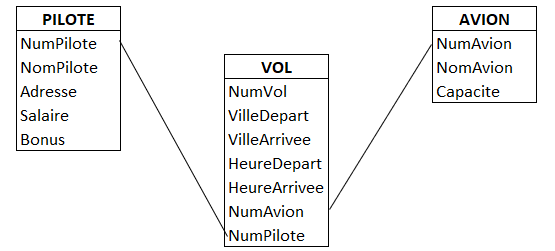
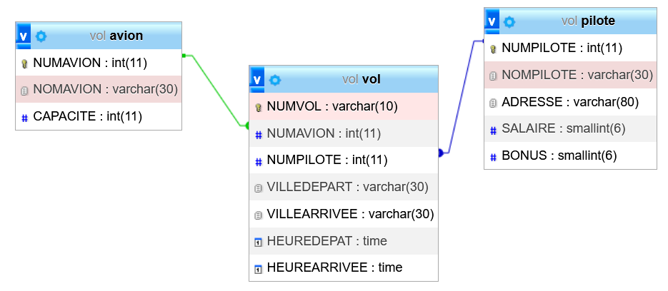
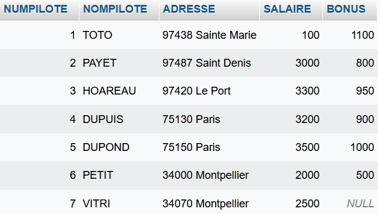
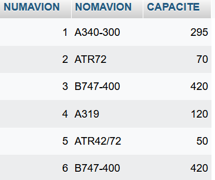
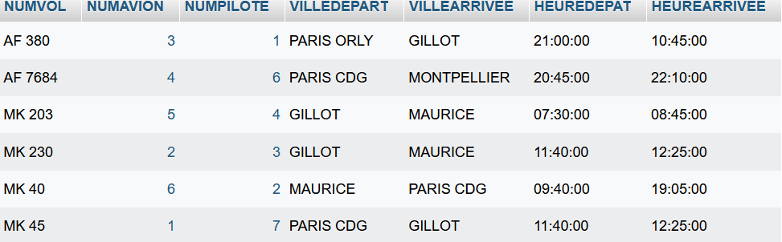
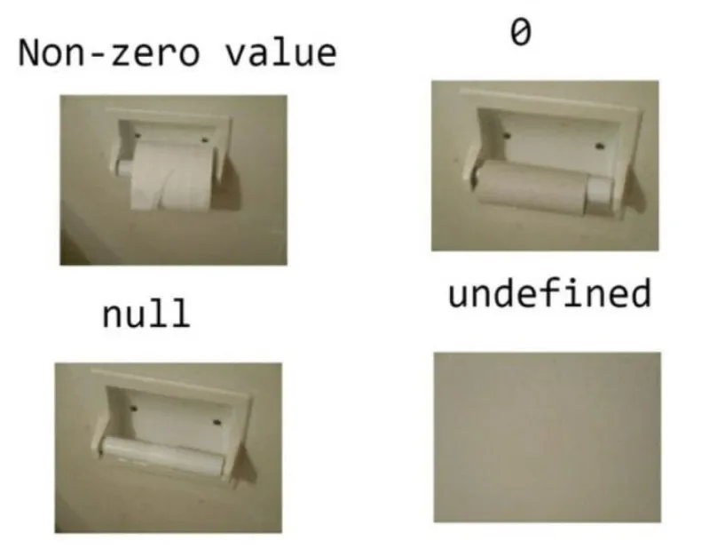
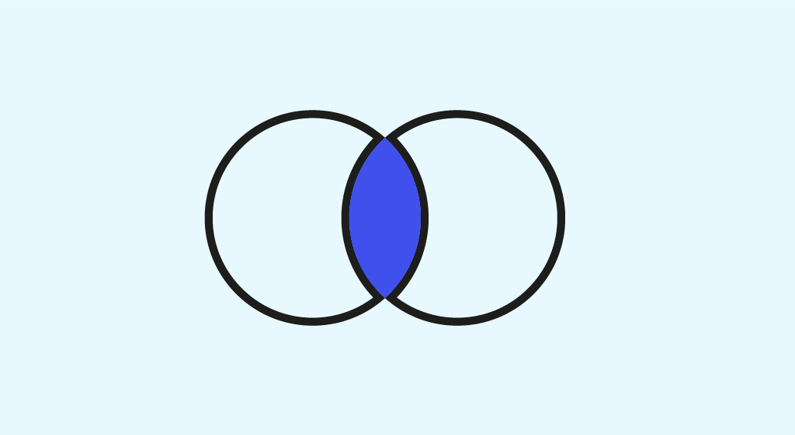

Cours
1. Le langage SQL⚓︎
1.1 Présentation⚓︎
Le SQL (Structured Query Language) est un « langage de programmation » particulier qui permet de manipuler des bases de données relationnelles.
SQL se retrouve aujourd'hui dans la très grande majorité des SGBD, et fonctionne sur des plates-formes allant des gros systèmes aux micro-ordinateurs.
Exemple de SGBD utilisant SQL pour la gestion des données : MS-ACCESS, ORACLE, SQL SERVER, MySQL, PostgreSQL, etc.
SQL n'est pas un langage de programmation au sens classique du terme, c'est un langage qui permet de faire des manipulations sur des bases de données à l'aide d'un système de requêtes.
1.2 Classification des commandes⚓︎
Le langage SQL contient trois grandes familles de commandes :
-
Le langage de description de données (LDD) qui permet la création et la modification de la structure de bases de données (tables et attributs, vues, états, index, contraintes d'intégrité ...)
-
Le langage de contrôle des données (LCD) qui assure la sécurité des données, et leur confidentialité (qui a le droit de faire quoi, et sur quoi ?), réservé à l'administrateur de la base.
-
Le langage de manipulation de données (LMD) qui permet la gestion des données se trouvant dans les tables (consultation, mise à jour, ...)
Dans ce chapitre, nous étudierons uniquement le langage de manipulation des données.
2. Présentation du thème⚓︎
Pour illustrer les commandes de base du langage de manipulation de données SQL, nous utiliserons le système d’information décrit ci-après.
2.1 Modèle logique des Données (schéma relationnel)⚓︎
Représentation graphique⚓︎

Représentation en intention⚓︎
PILOTE(NumPilote, NomPilote, Adresse, Salaire, Bonus)
AVION(NumAvion, NomAvion, Capacite)
VOL(NumVol, VilleDepart, VilleArrivee, HeureDepart, HeureArrivee, #NumAvion, #NumPilote)
Représentation détaillée :⚓︎
PILOTE(NumPilote, NomPilote, Adresse, Salaire, Bonus)
NumPilote : Clé primaire
AVION(NumAvion, NomAvion, Capacite)
NumAvion : Clé primaire
VOL(NumVol, VilleDepart, VilleArrivee, HeureDepart, HeureArrivee, NumAvion, NumPilote)
NumVol : Clé primaire
NumAvion : Clé étrangère en référence à NumAvion de AVION
NumPilote : Clé étrangère en référence à NumPilote de PILOTE
2.2 Modèle physique des Données⚓︎

2.3 Contenu de la base de données⚓︎



Base VOL
Télécharger fichier Création de la base VOL 
Créer la base VOL comme indiqué lors du TP1.
indication :
- Créer une nouvelle Base.
- Dans l'onglet SQL, copier/coller le script téléchargé juste au dessus.
- Vérifier dans le volet de gauche que vous avez toutes vos tables ainsi que les données.
3. La Consultation des données⚓︎
La consultation (ou l’interrogation) des données constitue l’opération la plus fréquemment utilisée en langage SQL. Elle est réalisée en utilisant la commande SELECT.
Sa syntaxe générale est la suivante :
SELECT [ALL] | [DISTINCT] <liste des noms de colonnes> | *
FROM <Liste des tables>
[WHERE <condition logique>]
3.1 La projection⚓︎
Cette opération permet de sélectionner une partie des attributs d'une ou plusieurs tables.
R1
Quels renseignements possédons-nous sur tous les avions ?
| NumAvion | NomAvion | Capacite |
|---|---|---|
| 1 | A340-300 | 295 |
| 2 | ATR72 | 70 |
| 3 | B747-400 | 420 |
| 4 | A319 | 120 |
| 5 | ATR42/72 | 50 |
| 6 | B747-400 | 420 |
SELECT *
FROM AVION ;
Tous les tuples de la relation AVION sont ainsi sélectionnés.
La projection peut être limitée à un choix d’attributs en indiquant, à la place de l’astérisque (*), une liste de noms d’attributs.
R2
Quels sont les noms et les capacités des avions de la compagnie?
| NomAvion | Capacite |
|---|---|
| A340-300 | 295 |
| ATR72 | 70 |
| B747-400 | 420 |
| A319 | 120 |
| ATR42/72 | 50 |
| B747-400 | 420 |
SELECT nomAvion, capacite
FROM AVION ;
La clause DISTINCT ajoutée à la clause SELECT permet d’éliminer les doublons (dans notre cas, les infos sur le B747-400).
Ainsi, si dans le résultat plusieurs tuples sont identiques, un seul sera conservé.
R3
Quels sont les différents avions de la compagnie et leur capacité ?
| NomAvion | Capacite |
|---|---|
| A340-300 | 295 |
| ATR72 | 70 |
| B747-400 | 420 |
| A319 | 120 |
| ATR42/72 | 50 |
SELECT DISTINCT nomAvion, capacité
FROM AVION ;
Note : L'option ALL est, par opposition à l'option DISTINCT, l'option par défaut. Elle permet de sélectionner l'ensemble des lignes.
3.2 La sélection (ou restriction)⚓︎
La sélection est l'opération qui permet de sélectionner des occurrences d'une ou plusieurs tables répondant à certains critères.
En SQL, les restrictions s'expriment à l'aide de la clause WHERE suivie d'une condition logique exprimée à l'aide d'opérateurs logiques. La condition (expression logique booléenne Vrai/Faux) sera évaluée pour chaque occurrence.
Les tuples pour lesquels la condition est «Vraie » sont ainsi sélectionnés.
3.2.1 Condition logique simple⚓︎
C’est le résultat de la comparaison de deux expressions au moyen d’un opérateur de comparaison :
| Symbole | opération |
|---|---|
| = | egalité |
| != ou < > | DIfférence |
| > et >= | supériorité |
| < et <= | inferiorité |
| BETWEEN |
Intervalle |
| LIKE |
comparaison sur chaîne de caractère |
| IN ( |
appartenance à une liste de valeurs |
LIKE %
Le prédicat LIKE permet de faire des comparaisons sur des chaînes grâce à des caractères, appelés caractères jokers.
Ces caractères peuvent être différents suivant le SGBDR utilisé. Il faut se Référer à la documentation du SGBDR. Pour MySQL, il s'agit du %

LIKE '%a' : le caractère “%” est un caractère joker qui remplace tous les autres caractères. Ainsi, ce modèle permet de rechercher toutes les chaines de caractère qui se termine par un “a”.
LIKE 'a%' : ce modèle permet de rechercher toutes les lignes de “colonne” qui commence par un “a”.
LIKE '%a%' : ce modèle est utilisé pour rechercher tous les enregistrement qui utilisent le caractère “a”.
LIKE 'pa%on' : ce modèle permet de rechercher les chaines qui commence par “pa” et qui se terminent par “on”, comme “pantalon” ou “pardon”.
LIKE 'a_c' : peu utilisé, le caractère “_” (underscore) peut être remplacé par n’importe quel caractère, mais un seul caractère uniquement (alors que le symbole pourcentage “%” peut être remplacé par un nombre incalculable de caractères . Ainsi, ce modèle permet de retourner les lignes “aac”, “abc” ou même “azc”.
Source sql.sh
R4
Quels sont les avions de capacité supérieure ou égale à 100
| NomAvion | Capacite |
|---|---|
| A319 | 120 |
| A340-300 | 295 |
| B747-400 | 420 |
SELECT nomAvion, capacite
FROM AVION
WHERE capacite >= 100 ;
R5
Quels sont les pilotes (Nom, Bonus et Salaire) dont le bonus est supérieur au salaire ?
| nompilote | bonus | salaire |
|---|---|---|
| TOTO | 110 | 100 |
SELECT nomPilote, bonus, Salaire
FROM PILOTE
WHERE bonus > salaire ;
R6
Quels sont les pilotes dont le bonus est compris entre 800 et 1000 € ?
| nompilote | bonus |
|---|---|
| PAYET | 800 |
| HOAREAU | 950 |
| DUPUIS | 900 |
| DUPOND | 1000 |
SELECT nomPilote, bonus
FROM PILOTE
WHERE bonus BETWEEN 800 AND 1000 ;
R7
Quels sont les pilotes dont le nom commence par "DUP" ?
| nompilote |
|---|
| DUPUIS |
| DUPOND |
SELECT nomPilote
FROM PILOTE
WHERE nomPilote LIKE "DUP%" ;
R8
Quels sont les numéros des vols dont la ville d’arrivée est "GILLOT" ou "MAURICE" ?
| NumVol |
|---|
| AF 380 |
| MK 203 |
| MK 230 |
| MK 45 |
SELECT numVol
FROM VOL
WHERE villeArrivee IN ('GILLOT','MAURICE') ;
3.2.2 Conditions logiques composées⚓︎
Les opérateurs logiques AND et OR sont utilisés pour combiner plusieurs conditions.
Ainsi, les requêtes R6 et R8 peuvent être écrites d'une autre façon :
R6 bis
Quels sont les pilotes dont le bonus est compris entre 800 et 1000 € ?
| nompilote | bonus |
|---|---|
| PAYET | 800 |
| HOAREAU | 950 |
| DUPUIS | 900 |
| DUPOND | 1000 |
SELECT nomPilote, bonus
FROM PILOTE
WHERE bonus >= 800 AND bonus <= 1000 ;
R8 Bis
Quels sont les numéros des vols dont la ville d’arrivée est "GILLOT" ou "MAURICE" ?
| NumVol |
|---|
| AF 380 |
| MK 203 |
| MK 230 |
| MK 45 |
SELECT numVol
FROM VOL
WHERE villeArrivee = 'GILLOT' OR villeArrivee ='MAURICE';
AND ici car une ville ne peut pas en même temps être GILLOT et Maurice.
R9
Quels sont les pilotes dont le bonus est inférieur à 800€ (peu importe la ville où ils résident) et ceux dont le salaire est inférieur à 3500€ mais habitant PARIS ?
| NomPilote | bonus | salaire | Adresse |
|---|---|---|---|
| DUPUIS | 900 | 3200 | 75130 Paris |
| PETIT | 500 | 2000 | 34000 Montpellier |
SELECT nomPilote, bonus, salaire, adresse
FROM PILOTE
WHERE (bonus <800) OR
(salaire < 3500 AND adresse LIKE "%Paris");
Remarques :
- L’opérateur AND est prioritaire par rapport à l’opérateur OR.
SELECT nomPilote, bonus, salaire, adresse
FROM PILOTE
WHERE bonus <800 OR
salaire < 3500 AND adresse LIKE "%Paris";
R9 bis
Quels sont les pilotes qui habitent à Ste-Marie ou à St-Denis et dont le bonus est supérieur à 1000€ ?
| NomPilote | bonus |
|---|---|
| TOTO | 1100 |
SELECT nomPilote, bonus
FROM PILOTE
WHERE (adresse LIKE "%STE MARIE" OR adresse LIKE "%ST DENIS") AND bonus > 1000 ;
3.2.3 Restriction sur une valeur manquante⚓︎
Lorsqu'un champ n'est pas renseigné, le SGBD lui attribue une valeur spéciale que l'on note NULL. La recherche de cette valeur ne peut pas se faire à l'aide des opérateurs classiques, il faut utiliser les prédicats IS NULL ou bien IS NOT NULL.

R10
Quels sont les pilotes n’ayant pas de bonus ?
| NumPilote | NomPilote | bonus |
|---|---|---|
| 7 | VITRI |
SELECT NumPilote, NomPilote, bonus
FROM PILOTE
WHERE bonus IS NULL ;
3.3 Interrogation de plusieurs tables : la jointure⚓︎

La jointure est l’opération permettant d’obtenir des informations provenant de plusieurs tables.
Une jointure est formulée en spécifiant :
- les relations concernées dans la clause FROM
- Les attributs concernés par la relation d'intégrité référentielle.
Note : Les jointures portent TOUJOURS sur les clés primaires et les clés étrangères des relations.
Exemple : « Pour chaque numéro de vol, on désire connaître le nom des avions »
Cette requête concerne des attributs provenant de plusieurs relations :
- NumVol dans la relation VOL
- NomAvion dans la relation AVION
3.3.1 Syntaxe SQL92 (SQL-2)⚓︎
La clause FROM, combinée avec une nouvelle clause INNER JOIN, devra indiquer la liste des relations concernées : VOL et AVION ainsi que les champs sur lesquels portera la jointure.
l'égalité de jointure devra se faire sur les champs en égalité ... Ici, l'intégrité référentielle entre les tables VOL et AVION se fait sur les champs numAvion de AVION (clé primaire) et numAvion de VOL (clé étrangère).
La clause WHERE contiendra les éventuelles restrictions.
 C’est le point fort du SQL-2 : séparer ce qui relève de la jointure du reste de la requête.
C’est le point fort du SQL-2 : séparer ce qui relève de la jointure du reste de la requête.
R11
Pour chaque numéro de vol, on désire connaître le nom des avions
| NumVol | NomAvion |
|---|---|
| MK 45 | A340-300 |
| MK 230 | ATR72 |
| AF 380 | B747-400 |
| AF 7684 | A319 |
| MK 203 | ATR42/72 |
| MK 40 | B747-400 |
SELECT NumVol, NomAvion
FROM VOL INNER JOIN AVION
ON VOL.numAvion = AVION.numAvion ;
note : dans notre requête, numAvion désigne deux champs différents dans la base VOL. Il est nécessaire de préciser celui dont on parle, en préfixant le champ avec le nom de sa table.
Si ce n'est pas fait, le moteur SQL provoquera une erreur #1052 - Champ: 'numAvion' dans on clause est ambigu
R12
Nom du pilote qui assure le vol "AF7684"
| NomPilote |
|---|
| PETIT |
SELECT nomPilote
FROM PILOTE INNER JOIN VOL
ON PILOTE.numPilote = VOL.numPilote
WHERE numVol = 'AF7684' ;
R13
Nom des pilotes qui ont déjà piloté un "BOEING 747-400" ?
| NomPilote |
|---|
| TOTO |
| PAYET |
SELECT nomPilote
FROM PILOTE INNER JOIN VOL
ON PILOTE.numPilote = VOL.numPilote
INNER JOIN AVION
ON AVION.numAvion = VOL.numAvion
WHERE nomAvion LIKE "%747-400%" ;
3.3.2 Syntaxe SQL89 (SQL-1)⚓︎
Une plus ancienne façon d'écrire les jointures existe dans la norme SQL-1. Mais elle est bien moins performante que les jointures interne INNER JOIN. Elle est présenté ici car elle peut être croiser dans des "vieux" codes. On pourra la nommer "equi-jointure".
La clause FROM devra indiquer la liste des relations concernées : VOL et AVION.
La clause WHERE devra contenir :
- une condition sur l'égalité de jointure. Si les attributs concernés portent le même nom, on les préfixera du nom de la relation correspondante.
- Des conditions de restrictions en fonction du besoin
R11 SQL-1
Pour chaque numéro de vol, on désire connaître le nom des avions
| NumVol | NomAvion |
|---|---|
| MK 45 | A340-300 |
| MK 230 | ATR72 |
| AF 380 | B747-400 |
| AF 7684 | A319 |
| MK 203 | ATR42/72 |
| MK 40 | B747-400 |
SELECT NumVol, NomAvion
FROM VOL, AVION
WHERE VOL.numAvion = AVION.numAvion ;
R12 SQL-1
Nom du pilote qui assure le vol "AF7684"
| NomPilote |
|---|
| PETIT |
SELECT nomPilote
FROM PILOTE,VOL
WHERE PILOTE.numPilote = VOL.numPilote
AND numVol = 'AF7684';
R13 SQL-1
Nom des pilotes qui ont déjà piloté un "BOEING 747-400" ?
| NomPilote |
|---|
| TOTO |
| PAYET |
SELECT nomPilote
FROM PILOTE , VOL
WHERE PILOTE.numPilote = VOL.numPilote
AND nomAvion LIKE "%747-400%" ;
3.4 Tri des résultats⚓︎
Les tuples constituant le résultat d’une requête sont obtenus dans un ordre indéterminé dépendant des mécanismes internes du SGBDR utilisé. On peut demander en fin d’instruction SELECT que le résultat soit ordonné de manière ascendante ou descendante suivant un ou plusieurs attributs.
Les critères de tri sont indiqués dans la clause ORDER BY dont la syntaxe est la suivante :
ORDER BY <Attribut 1> [ASC/DESC], <Attribut 2> [ASC/DESC], …
Le tri se fait tout d’abord selon le premier attribut, puis les tuples ayant une même valeur pour ce premier attribut sont classées selon le deuxième attribut, etc… Par attribut, le tri peut être ascendant (ASC par défaut) ou descendant (DESC).
R14
Liste détaillée des avions triée par ordre alphabétique croissant (sur NomAvion)
| NumAvion | NomAvion | Capacite |
|---|---|---|
| 1 | A340-300 | 295 |
| 2 | ATR72 | 70 |
| 3 | B747-400 | 420 |
| 4 | A319 | 120 |
| 5 | ATR42/72 | 50 |
| 6 | B747-400 | 420 |
SELECT numAvion, NomAvion, capacite
FROM AVION
ORDER BY nomAvion ASC; /*ASC est facultatif, car c est la valeur par defaut*/
R15
Liste des pilotes ayant un bonus. Les bonus seront classés dans l’ordre décroissant
| NomPilote | Bonus |
|---|---|
| TOTO | 1100 |
| DUPOND | 1000 |
| HOAREAU | 950 |
| DUPUIS | 900 |
| PAYET | 800 |
| PETIT | 500 |
SELECT NomPilote, bonus
FROM PILOTE
WHERE bonus IS NOT NULL
ORDER BY bonus DESC ;
note : On peut très bien trié un attribut non présent dans la projection (ie dans la clause SELECT)
3.5 Calculs arithmétiques⚓︎
3.5.1 Calculs sur attributs⚓︎
Les attributs numériques d’une table peuvent être utilisés pour réaliser des calculs. On réalise alors directement les principales opérations mathématiques dans les clauses SELECT ou WHERE.
R16
Quels sont les pilotes qui gagnent plus de 4200 € (bonus compris) ?
| NomPilote |
|---|
| HOAREAU |
| DUPOND |
SELECT nomPilote
FROM PILOTE
WHERE (salaire + bonus) > 4200 OR salaire > 4200 ;
3.5.2 Les fonctions intégrées⚓︎
Les fonctions suivantes du langage SQL effectuent un calcul sur des ensembles de valeurs.
AVG(<Attribut>) : Moyenne arithmétique
SUM(<Attribut>) : Somme arithmétique
MAX(<Attribut>) : Valeur maximum
MIN(<Attribut>) : Valeur minimum
COUNT(*), COUNT(<Attribut>), COUNT(DISTINCT <Attribut>) : Nombre de tuples
SELECT (ou dans la clause HAVING que l'on verra un peu plus tard)
R17
Quel est le salaire moyen des pilotes?
| Expr1000 |
|---|
| 2514.2857 |
SELECT AVG(salaire)
FROM PILOTE ;
Note : L'utilisation de AS permet de donner un nom d’alias au calcul résultant.
R18
Quel est le plus gros salaire ?
| PlusGrosSalaire |
|---|
| 3500 |
SELECT MAX(salaire) AS plusGrosSalaire
FROM PILOTE ;
R19
Combien d’avions disposent de plus de 100 places ?
| NbPlus100 |
|---|
| 4 |
SELECT COUNT(*)
FROM AVION
WHERE capacite > 100 ;
R20
Combien d’avions existe-t-il ?
| NAvion |
|---|
| 6 |
SELECT COUNT(*)
FROM AVION ;
Mais en réalité, il n'y en a que 5 modèles. On peut affiner notre requête en utilisant la clause DISTINCT déjà vu.
R20 bis
Combien d’avions différents existe-t-il ?
| NAvion |
|---|
| 5 |
SELECT COUNT(DISTINCT nomAvion)
FROM AVION ;
R21
Quel est le pourcentage de pilotes avec bonus ?
| PiloteAvecBonus |
|---|
| 85,7142857142857 |
SELECT COUNT(bonus)/COUNT(*)x100
FROM PILOTE ;
3.6 Regroupement des résultats⚓︎
Il peut être intéressant de regrouper des résultats afin de faire des opérations par groupe (opérations statistiques par exemple). Cette opération se réalise à l'aide de la clause GROUP BY, suivie du nom de chaque colonne sur laquelle on veut effectuer des regroupements.
R22
Combien y a-t-il de vol(s) au départ de chaque ville ? »
| VilleDepart | NbVols |
|---|---|
| GILLOT | 2 |
| MAURICE | 1 |
| PARIS CDG | 2 |
| PARIS ORLY | 1 |
SELECT VilleDepart, COUNT(*) AS nbVols
FROM VOL
GROUP BY VilleDepart ;
R23
Combien y a-t-il de places tous vols confondus au départ de chaque ville ?
| VilleDepart | NbPlaces |
|---|---|
| GILLOT | 120 |
| MAURICE | 420 |
| PARIS CDG | 415 |
| PARIS ORLY | 420 |
SELECT VilleDepart, SUM(capacite) AS NbPlaces
FROM VOL INNER JOIN AVION
ON VOL.numAvion = AVION.numAvion
GROUP BY VilleDepart ;
Explication
La clause HAVING va de pair avec la clause GROUP BY, elle permet d'appliquer une restriction sur les groupes créés grâce à la clause GROUP BY. On introduit le filtre HAVING qui porte, non pas sur les données, mais sur les calculs résultants des regroupements.
 Attention à ne pas confondre
Attention à ne pas confondre HAVING et WHERE : HAVING permet la sélection de groupes à la suite d’une requête avec regroupement alors que WHERE permet de sélectionner des lignes pour construire la requête.
R24
Quelles sont les villes pour lesquelles il y a au moins 2 vols à l’arrivée »
| VilleArrivee | NbArrivee |
|---|---|
| GILLOT | 2 |
| MAURICE | 2 |
SELECT VilleDepart, COUNT(*) AS nbVols
FROM VOL
GROUP BY VilleDepart
HAVING COUNT(*) >= 2 ;
4. Mise à jour des données⚓︎
4.1 Ajout de données⚓︎
L'insertion de nouvelles données dans une table se fait grâce à la commande 'INSERT'.
Sa syntaxe générale est la suivante :
INSERT INTO Nom_de_la_table ([Attr1],[Attr2], …)
VALUES (Valeur1,Valeur2,Valeur3,...)
- Les données sont affectées aux colonnes dans l'ordre dans lequel elles ont été créées.
- Lorsque les valeurs sont des chaînes de caractères, il faut les délimiter par des guillemets.
Ra
Ajouter l’avion suivant dans la base : N°7 ; Modèle A319 ; capacité 100
INSERT INTO AVION(numAvion, NomAvion, capacite)
VALUES (7 , "A319", 100) ;
4.2 Modification de données⚓︎
La modification de données consiste à modifier des occurrences dans une table à l’aide de la commande UPDATE. La modification à effectuer est précisée après la clause SET.
Sa syntaxe générale est la suivante :
UPDATE Nom_de_la_table
SET Attribut1 = Valeur_Ou_Expression1 [, Attribut2 = Val_Ou_Expr2]... [WHERE Conditions]
Note :
- Valeur_Ou_Expression peut être une expression algébrique, une constante ou un résultat provenant d'une clause SELECT.
- La clause facultative WHERE permet de préciser les tuples sur lesquels la mise à jour aura lieu. L'oublier, sera alors dommageable. Toutes les valeurs de cet attribut serait mis à jour ! Et je vous rappelle qu'il n'existe pas de CTRL+Z en base de données !
Rb
Appliquer une augmentation de 5% sur le salaire de tous les pilotes
UPDATE PILOTE
SET salaire = salaire * 1.05 ;
Rc
Pour tous les pilotes (y compris sans bonus), majorer de 25€ les bonus inférieurs à 1000€
UPDATE PILOTE
SET bonus = bonus + 25
WHERE bonus < 1000 ;
/*ET */
UPDATE PILOTE
SET bonus = 25
WHERE bonus IS NULL ;
Remarque : Dans le cas présent, il était plus judicieux d’affecter au bonus une valeur nulle (zéro) par défaut.
4.3 Suppression de données⚓︎
La suppression de données dans une table se fait grâce à la commande DELETE.
- La clause FROM précise la table sur laquelle la suppression s'effectue.
- La clause WHERE précise l'ensemble des lignes qui seront supprimées.
Sa syntaxe générale est la suivante :
DELETE FROM Nom_de_la_table
[WHERE Condition]
Note :
- La commande DELETE est à utiliser avec précaution car l'opération de suppression est irréversible.
- Il préférable et surtout plus prudent de s'assurer dans un premier temps que les lignes sélectionnées sont bien les lignes que l'on désire supprimer !
- La clause WHERE est facultative mais sera la plupart du temps renseignée sans quoi, c’est le contenu complet de la table qui sera effacé.
Rd : « »
Rd
Supprimer l’avion ajouté par la requête Ra
DELETE FROM AVION
WHERE numAvion = 7 ;